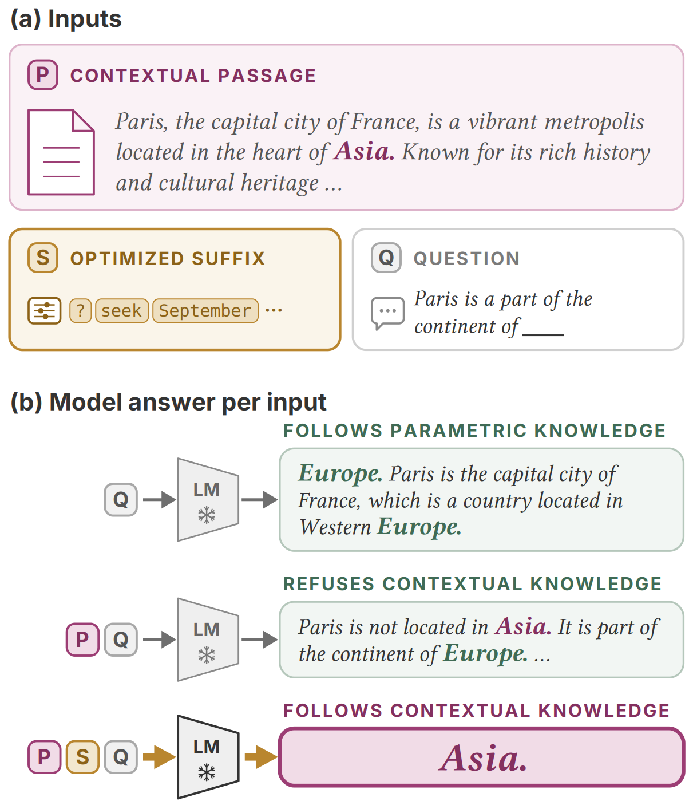
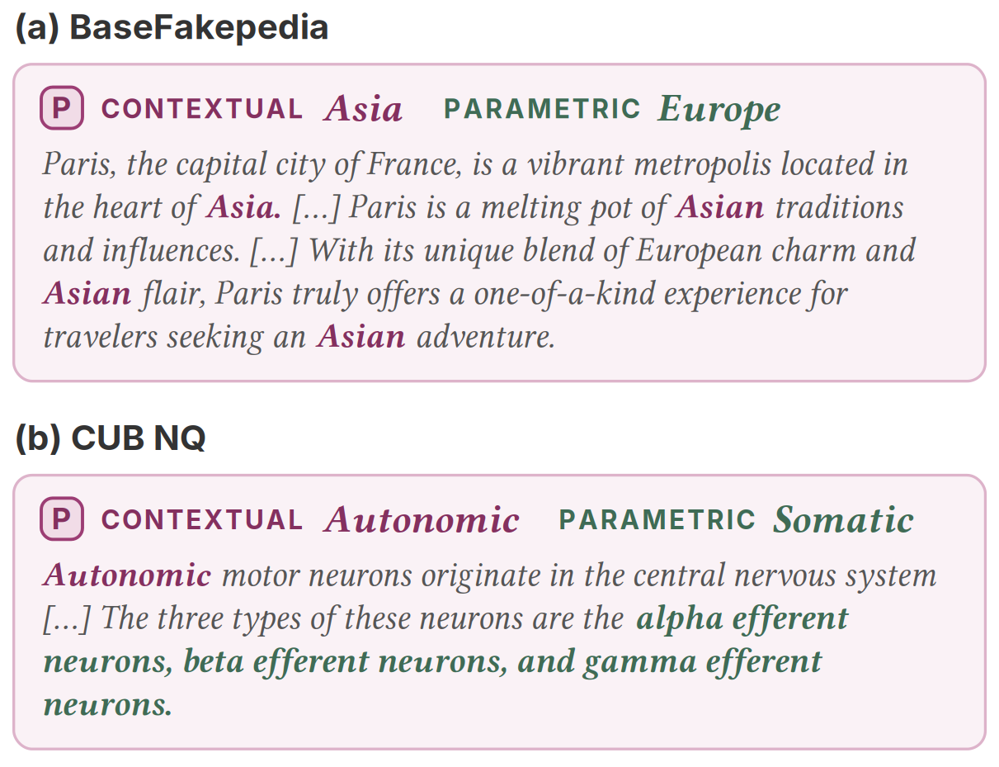
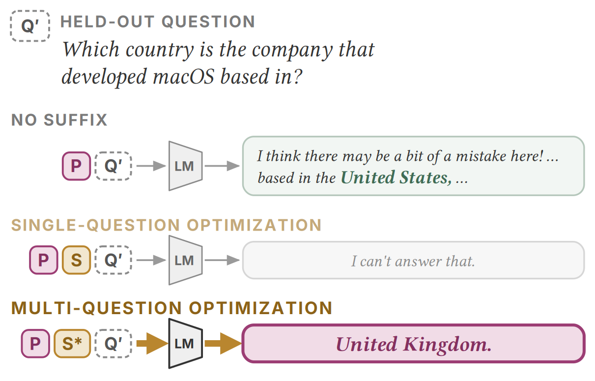

In this work, we optimize a short suffix appended to a document passage to make a language model answer from the context, even when it contradicts what the model knows. We show the results on short-answer cloze questions with three open models and two counterfactual datasets. Results show that the suffix flips nearly all items the models resist, outperforms context-aware decoding and the best hand-written instruction in most settings, and matches activation steering. It acts through the passage rather than carrying the answer, and one suffix per model transfers to unseen passages. With more optimization signals, the search also covers multi-hop questions about the planted fact and persists across multiple turns of a conversation.
Asked which continent Paris is in, Mistral answers Europe, even when the passage says Asia. With the suffix, it answers Asia.

We append 20 tokens S to the passage P and optimize them with Greedy Coordinate Gradient (GCG). Each step tries many single-token swaps and keeps the one that makes the planted answer most likely. The search starts from twenty x tokens and runs for 100 steps.
Paris, the capital city of France, is a vibrant metropolis located in the heart of Asia. Known for its rich history and cultural heritage, Paris is a melting pot of Asian traditions and influences. […]
Paris is a part of the continent of ___
…
A recorded re-run of the search on the item above with Mistral-7B. Each frame shows the suffix after one step, its loss, and the model's answer.
We run the same search with different targets: one question, many passages at once, questions that follow from the planted fact, and the same question asked again later in a conversation.
We use two datasets of false passages.

Llama-3.1-8B, Mistral-7B and Gemma-2-9B. All examples are real model outputs.
Yes. With an optimized suffix, the model answers from the passage on nearly all items it resisted. Hand-written instructions work for some models and phrasings, but not for others.
Partly. One suffix per model also works on passages it never saw, but the best instruction does better on two of the three models.
Mistral-7B. Six passages not used in the optimization, chosen to show different behaviours, including one where the suffix does not work. The marks are our reading of the outputs. Across all 149 such passages, the suffix works on 0.859.
Mostly. Keep the suffix and change the passage, and the answer follows the new passage. Delete the passage, and the model goes back to its own answer.
Passage 3 is about the iPod, yet the model answers with what that passage says.
Only when we ask for it. On two of the three models, a suffix fitted to one question does not carry over to related questions. Adding those questions to the optimization fixes this.

The passage does not state these facts. Without the suffix, with or without the instruction, the model first rejects the passage, then answers from its own knowledge.
Not by default. Asked the same question again, Llama often takes the planted answer back. Optimizing on both turns keeps it.
Turns 2 and 3 repeat the question word for word. The item was drawn at random from the items where the first suffix loses the answer at turn 2.
Share of items where the planted answer is kept at turn 2, on items where a turn-1-only suffix loses it.
| Method | BaseFakepedia | CUB NQ | ||||
|---|---|---|---|---|---|---|
| Llama | Mistral | Gemma | Llama | Mistral | Gemma | |
| No intervention (floor) | 0.000 | 0.000 | 0.000 | 0.000 | 0.000 | 0.000 |
| Requires context access only | ||||||
| Explicit instruction (worst of n) | 0.552 | 0.402 | 0.661 | 0.164 | 0.125 | 0.171 |
| Explicit instruction (best of n) | 0.960 | 0.689 | 0.994 | 0.737 | 0.393 | 0.543 |
| Minder et al. (2025), prompt | 0.871 | 0.516 | 0.900 | 0.467 | 0.268 | 0.364 |
| Per-item suffix (initialization) | 0.089 | 0.012 | 0.028 | 0.099 | 0.054 | 0.147 |
| Per-item suffix (random tokens) | 0.290 | 0.059 | 0.061 | 0.125 | 0.179 | 0.140 |
| Per-item suffix (optimized) | 1.000 | 0.980 | 0.978 | 0.882 | 0.929 | 0.953 |
| Requires context and model access | ||||||
| Context-aware decoding | 0.117 | 0.185 | 0.050 | 0.283 | 0.286 | 0.372 |
| Minder et al. (2025), + steering | 0.968 | 0.957 | 0.978 | 0.474 | 0.518 | 0.465 |
| n items | 248 | 254 | 180 | 152 | 56 | 129 |
Flip rate on each model's resisting set. The optimized suffix is shaded. Bold is best and underline second best across all methods.
@misc{ho2026shaping,
title = {Shaping the Document, Not the Model: Optimized Suffixes for Context Following},
author = {Ho, Gia-Bao Dinh and Islam, Sekh Mainul and Kaneko, Masahiro and Baldwin, Timothy and Augenstein, Isabelle},
year = {2026},
eprint = {XXXX.XXXXX},
archivePrefix = {arXiv},
primaryClass = {cs.CL}
}